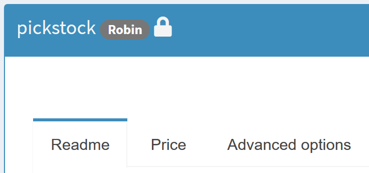

Moving to the cloud
GAMS MIRO Server
With GAMS MIRO Server, the model calculations and the MIRO applications themselves are moved to the cloud. Apps deployed with MIRO Server can be accessed from any device with a modern web browser. Local MIRO or GAMS installations and licenses are no longer necessary. This makes MIRO Server the most convenient solution when it comes to making apps available to end users all over the world. All you need as a user is a URL, valid credentials (optional) and you are ready to go.
A detailed overview of the MIRO Server architecture can be found here.
Besides the benefits of making them easily accessible, central hosting of MIRO apps also brings other aspects into focus:
- Asynchronous solving: Submit jobs and log back in later to get the results.
- Scenario sharing: Share scenarios of your MIRO application(s) with other users easily from within the app.
- User- and group management: Map structures of your work environment by dividing MIRO users into groups with different privileges. Decide who can see which apps and/or who has control over adding new ones.
- App updates: Update MIRO apps without the risk of interrupting running applications.
Asynchronous Solving
Jobs that are solved with GAMS Engine in the cloud are always processed asynchronously. This has the following advantages:
- You can submit several jobs in a row without having to wait for the results of previous jobs.
- A MIRO application does not have to keep running during the calculations, i.e. you can close the application and return at a later time to view the results.
Instead of a normal 'Solve Model' button like in MIRO Desktop, a dropdown menu appears in a MIRO app running under MIRO Server:

The choices are:
-
Solve model:
The workflow is identical to the synchronous solving in MIRO Desktop. After clicking on Solve model the view changes to the GAMS interaction section, where log and listing files are shown during the calculations (if they are not hidden). After solving the view changes to the output section.
Note that unlike MIRO Desktop, the job is now executed asynchronously. You can therefore close the MIRO app during the calculations. From the moment you log out and log back in, the job will be treated as a job that you submitted by clicking submit job rather than solve model. This means no log will be displayed anymore in the GAMS interaction section. Also, the results are not loaded automatically after solving. Instead the job is moved to the job list. From there you can get the results after finishing the calculations.
-
Submit job:
A submitted job is put directly into the job list. No log is displayed, and results are not automatically loaded into the interface. Instead, the results can be imported later. Submitting a job in this way makes sense especially if you want to solve multiple jobs in a row without waiting for the results to come in.
Job list
The job list in the GAMS interaction section lists all submitted jobs that are still running or whose results have not yet been imported. It shows for each submitted job the owner, the submission date and the specified job name. In addition, the current status (scheduled, running or completed) is visible.

Results that have not yet been imported or are still pending can be discarded. As soon as a job has finished, the results can be loaded into the sandbox with a click on Download results. Note that this does not save a scenario in the database.
If you want to see jobs that previously have been imported or discarded, you can do so by clicking on Show history:
Scenario Sharing
Rules for scenario sharing
If several users have access to the same MIRO Server app, they can share scenarios. Shared scenarios can be loaded from the database into the sandbox in the same way as your own scenarios.

The following rules apply:
- Scenarios can be shared with individual users and/or with user groups.
- Scenarios can only be shared with groups or users of a group in which you are a member yourself. Inviters can also see users in groups of invitees of which they themselves are not members. Admins can see all users and groups.
- The user who shares a scenario with others is the scenario owner. The scenario owner is displayed to other users when they load a shared scenario into their sandbox.
- Scenarios can be stored under the same name in the database if the owner is different.
- Access permissions are assigned to a shared scenario. As scenario owner you decide about who has read, write and/or execute permissions. Users with read permissions can load the owner's scenario but are not authorized to edit or execute it. The scenario is marked with a lock symbol (). Write permissions give you the right to change the scenario (data) and save it again. With execute permissions you are authorized to solve the scenario.
- It is not possible to revoke the owner's access permissions.
- Users with read access can duplicate the scenario via the "Save as" button. They become the owner of this new scenario.
-
For the time a scenario is opened in MIRO, it is
locked for other users. This prevents conflicts
arising when a scenario is used concurrently. Locked
scenarios can be opened in readonly mode by others
(and also saved under a new name). A lock symbol () next to the scenario name indicates the readonly
status. Users with write permissions for the scenario
are additionally informed about this via a
notification in the lower right corner of the screen.


Share a scenario
The information about whether a scenario should be shared with others is controlled in the 'Access permissions' tab under Scenario → Edit metadata.

In the example below, Rebecca is scenario owner. She gives the single user 'rschuchmann' and the group 'group 1' read permission for her scenario. Since she does not want her scenario data to be changed, she decides not to give write permissions to any other user. Members of 'group 1' usually only look at results and do not want to start optimization runs. Therefore, Rebecca only grants execution rights to "rschuchmann".

GAMS MIRO Desktop - Boosted by GAMS Engine
With GAMS MIRO Desktop - Boosted by GAMS Engine, you can solve GAMS jobs in the cloud with your locally running MIRO applications. This setup requires GAMS Engine (read more about the installation of GAMS Engine here). To switch from running your optimization jobs on your local machine to solving them in the cloud, open your MIRO library, go to Preferences → GAMS Engine and check the "Execution of models on GAMS Engine" checkbox. This setting affects all deployed MIRO apps (started via the MIRO library) and all MIRO apps in development (started via GAMS Studio or the command line). A form opens in which you must enter the Engine URL (e.g. https://engine.gams.com if you are using Engine SaaS), an Engine namespace for which you have at least write and execute rights, as well as your login data.

If you are a developer and want to use a not yet deployed MIRO app with Engine, you need to create the model assembly file first. With this you tell MIRO which files belong to the GAMS model. This is primarily the main model file, but also all files necessary to calculate all inputs and outputs, e.g. files that are included in the model. Read more about the model assembly file here.
The next time you launch a MIRO application, a login dialog appears. To connect to GAMS Engine, the following information is required:
- Engine URL: URL where GAMS Engine is hosted, e.g. http(s)://mydomain.com/engine/api.
- Username & password: Your GAMS Engine credentials. More about the user management of GAMS Engine can be found here.
- Namespace: The namespace to solve the model in. Engine uses these namespaces to organize GAMS models. Your user account needs at least execute permissions on the namespace to run a registered model, or write and execute permissions to run an unregistered model. Further information can be found here.
- Is your model registered in the namespace: If a model is registered in an Engine namespace, the model files are stored on Engine. This avoids having to send the same model files to Engine for each job you submit. Only the scenario data is communicated in this case. Read more here.
- Remember me: Your credentials will be saved so that you will not have to log in again the next time you start the application.
If a MIRO application runs with GAMS Engine backend, jobs are solved asynchronously. All submitted jobs can be found and imported in the joblist in the GAMS interaction section.
Does my model run on a server?
When a model is sent from MIRO to GAMS Engine, it is executed in a Linux environment. This means that Windows-only tools like GDXXRW are not available and a corresponding call in the model will lead to an error on GAMS Engine. Furthermore it has to be considered that Linux is case-sensitive. It should therefore be ensured that file system calls (file paths as well as file names) from within the model code are correctly capitalized. The model is executed in an isolated environment ("container"). Therefore it is important that file paths can be applied correctly (e.g. no hardcoded absolute paths).